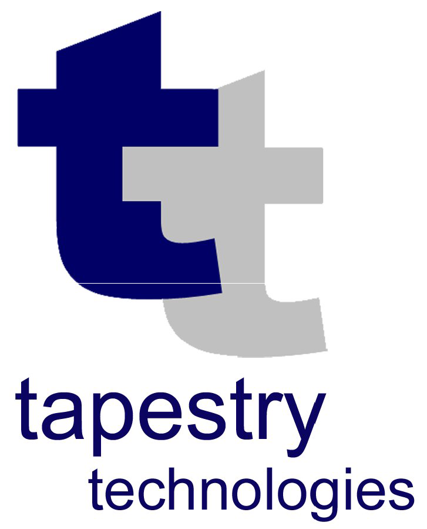
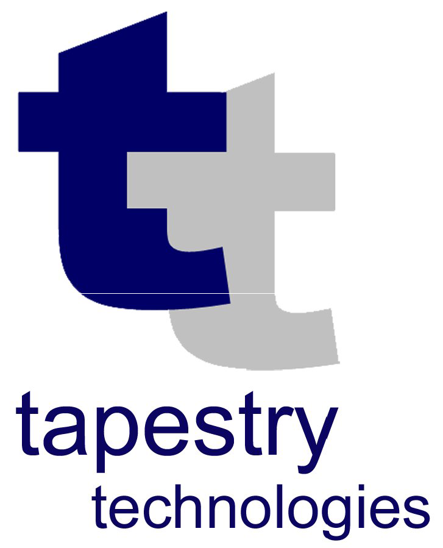

Why CPOSC?
Technology is evolving with unprecedented speed, which means it's more important than ever for those on the front lines of tech to gather, converse & share their experiences. CPOSC offers technologists passionate about open source technologies that very opportunity through presentations, panel discussions, lightning talks & more.
Why Downtown Lancaster?
As Downtown Lancaster's arts, music, drinking & dining scenes have garnered national recognition over the past decade, we firmly believe that the Lancaster tech scene is in the midst of its own big break out. By moving downtown beginning in 2016, we wanted CPOSC to be at the center of this impending tech explosion. As a bonus: it's an easy walk from the Ware Center to the CPOSC After Party!
What to expect:
Since its start, CPOSC has featured some of the most experienced technologists in the industry presenting on a variety of open source topics, from introductions to emerging technologies to deep dives into coding languages, as well as high-level case studies recounting what worked, what didn't work, and the lessons learned along the way.


 
